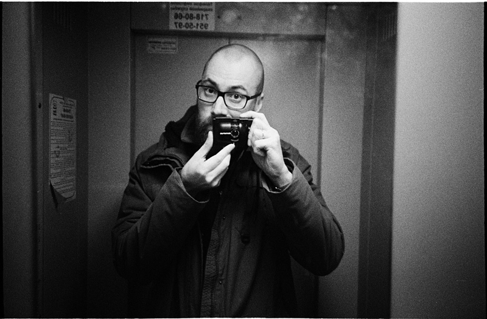

Привет!
Меня зовут Алексей Пегов.
Я программист, увлекаюсь пленочной фотографией, люблю смотреть авторское кино и слушать джаз. Про все это я [кратко] пишу в этом блоге.
Это я (образца 2022 года):

Записи из этого блога транслируются в RSS-поток и телеграм-канал.
Связаться со мной можно, написав на почту: iam[at]alexeypegov.com.